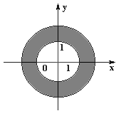
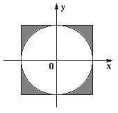
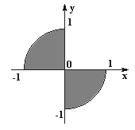
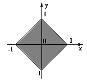
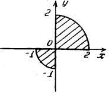
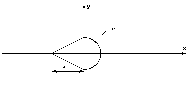

При составлении программы часто необходимо выполнение различных действий в зависимости от результатов проверки некоторых условий. Для организации ветвлений можно воспользоваться условным оператором, который имеет вид:
if В {S1} else {S2}
где B - выражение логического типа; S1 и S2 - операторы. Выполнение условного оператора осуществляется следующим образом. Вычисляется значение выражения B. Если оно истинно, то выполняются операторы S1, если ложно - операторы S2. Если последовательность операторов S1 или S2 состоит лишь из одного оператора, то фигурные скобки можно опустить. Возможна сокращенная форма условного оператора:if В {S}
где B - выражение логического типа; S - последовательность операторов. Выполнение краткого условного оператора осуществляется так: вычисляется значение выражения B, если оно истинно, то выполняются операторы S.Для трех заданных значений а, b, с необходимо написать сценарий, определяющий максимальное значение. Поступим следующим образом. Сначала максимальным значением m будем считать значение а, далее значение b сравним с максимальным. Если окажется, что b больше m, то максимальным становится b. И, наконец, значение c сравнивается с максимальным значением из предыдущих значений а и b. Если c больше m, то максимальным становится c. Оператор присваивания obj.res.value=m обеспечивает запись вычисленного максимального значения в соответствующее поле формы. Функция Number (s) преобразует объект s, заданный в качестве параметра, в число. Полностью сценарий может быть записан так, как представлено в листинге 1.
Листинг 1. Вычисление максимального значения из трех заданных
<HTML>
<HEAD>
<TITLE>Вычисление максимального значения</TITLE>
<script language="JavaScript">
<!-- //
function maxval (obj )
{
var a = Number(obj.num1.value);
var b = Number(obj.num2.value);
var c = Number(obj.num3.value);
var m=a;
if (b > m) m=b;
if (c > m) m=c;
obj.res.value=m;
}
//-->
</script>
</HEAD>
<BODY>
<H4>Вычисление максимального значения</H4>
<FORM name="form1">
Число 1: <input type="text" size=8 name="num1"><hr>
Число 2: <input type="text" size=8 name="num2"><hr>
Число 3: <input type="text" size=8 name="num3"><hr>
Максимальное значение равно
<input type="button" value=Определить onClick="maxval(form1)">
<input type="text" size=8 name="res"><hr>
<input type="reset">
</FORM>
</body>
</html>
Решим рассмотренную задачу другим способом. Вспомним, что стандартный объект Math имеет метод max, который определяет наибольшее значение двух аргументов. Опишем функцию maxval1, которая определяет максимальное значение из трех заданных значений и использует объект Math.
function maxval1 (obj )
{
var a = Number(obj.num1.value);
var b = Number(obj.num2.value);
var с = Number(obj.num3.value);
obj.res.value=Math.max(Math.max(a,b),c)
}
Если бы требовалось определить максимальное из четырех заданных значений а, b, с, d, то можно было бы воспользоваться формулой Math.max(Math.max(a,b), Math.max(c,d)).

Рис 2.1. Точка попадает в область, образованную исключением двух кругов

Рис 2.2. Точка попадает в область, образованную исключением квадрата и круга

Рис 2.3. Точка попадает в область, образованную двумя секторами

Рис 2.4. Точка попадает в область, образованную ромбом

Рис 2.5. Точка попадает в область, образованную двумя секторами

Рис 2.6. Точка попадает в область, образованную объединением треугольника и полукруга. (задание для отсутствующих на паре)
Все реализованные сценарии разместите в блоге, предварительно добавив логотип, в каждый файл (Web –страницу )